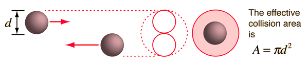
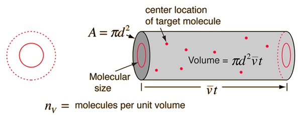
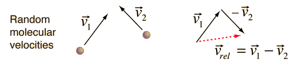
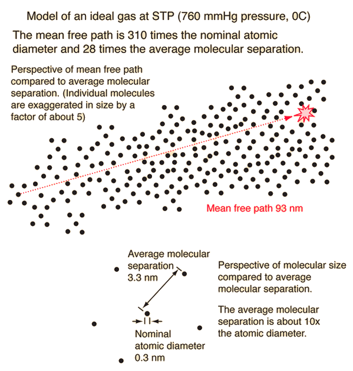

本文译自 Mean Free Path。
平均自由程
平均自由程，即气体分子两次碰撞间自由运动的平均路程，可根据气体动力学理论（kinetic theory）估计得出。Serway 方法是一种很好的可视化方法，它假设分子直径为 $d$，则碰撞的有效横截面为

即用一个直径为 $2d$ 的圆代表某一分子的有效碰撞区域，同时将目标分子视为一个质点。在时间 $t$ 内，该圆将扫过如下图所示的体积，碰撞的数量可以由该体积内的气体分子数目估计得到。

平均自由程可由路程长度除以碰撞数量求得：
$$ \text{平均自由程估计} = \frac{\bar{v} t}{\pi d^2 \bar{v} t n_v} = \frac{1}{\pi d^2 n_v} $$
其中，分子上 $\bar{v} t$ 为分子移动距离；分母中 $\pi d^2 \bar{v} t$ 为分子间相互作用的体积，$n_v$ 为每单位体积内的分子数目。上式整体即每碰撞间的平均距离。
上式中存在的问题是，这里参与计算的是分子平均速度，但目标分子也一直在移动，碰撞的频率依赖于自由运动分子的平均相对速度。
平均相对速度
为了计算气体分子的平均自由程，需要估算出分子间的平均相对速度，而不仅仅是某一给定分子的平均速度。任意两个分子的相对速度都可以用它们的矢量速度来表示。

相对速度的幅值可表示为它自己的标量积的平方根，即
$$ v_{\text{rel}} = \sqrt{\vec{v}_{\text{rel}} \cdot \vec{v}_{\text{rel}}} $$
可进一步表示为
$$ v_{\text{rel}} = \sqrt{(\vec{v}_1 - \vec{v}_2) \cdot (\vec{v}_1 - \vec{v}_2)} $$
$$ v_{\text{rel}} = \sqrt{\vec{v}_1 \cdot \vec{v}_1 - 2 \vec{v}_1 \cdot \vec{v}_2 + \vec{v}_2 \cdot \vec{v}_2} $$
对上式中各项取平均，由于 $\vec{v}_1$ 和 $\vec{v}_2$ 随机且无关，则 $\overline{\vec{v}_1 \cdot \vec{v}_2} = 0$，所以
$$ \overline{v_{\text{rel}}} = \sqrt{\overline{\vec{v}_1 \cdot \vec{v}_1} - 2 \overline{\vec{v}_1 \cdot \vec{v}_2} + \overline{\vec{v}_2 \cdot \vec{v}_2}} = \sqrt{\bar{v}_1^2 + \bar{v}_2^2} $$
又因为每个分子的平均速度是一样的，即 $\bar{v}_1 = \bar{v}_2 = \bar{v}$，所以平均相对速度为
$$ \overline{v_{\text{rel}}} = \sqrt{2} \bar{v} $$
平均自由程的修正
上面给出的平均自由程的初步计算公式有一个严重的缺陷，即假设目标分子处于静止状态，而实际上它们有很高的平均速度。这里需要的是平均相对速度，如前所述，由分子速度分布（speed distribution）计算得到的平均相对速度为
$$ \overline{v_{\text{rel}}} = \sqrt{2} \bar{v} $$
则在时间 $t$ 内扫过的有效体积为 $\pi d^2 \sqrt{2} \bar{v} t$，最终的平均自由程为
$$ \lambda = \frac{1}{\sqrt{2} \pi d^2 n_v} $$
再由理想气体方程（Ideal Gas Law）
$$ P V = n R T $$
则
$$ n_v = \frac{n N_A}{V} = \frac{n N_A}{n R T / P} = \frac{N_A P}{R T} $$
$$ \lambda = \frac{R T}{\sqrt{2} \pi d^2 N_A P} $$
其中，$n$ 为摩尔数，$R = 8.3145~\text{J/mol} \cdot \text{K}$ 为气体常数，$P$ 为绝对压力，$V$ 为气体体积，$T$ 为绝对温度，$N_A = 6.0221 \times 10^{23}~\text{mol}^{-1}$ 为阿伏加德罗常数（Avogadro’s number）。
需要注意的是，上式中的平均自由程的计算，将分子视为坚硬的球体，而实际的分子却不是这样的。对于惰性气体，碰撞是近乎完全弹性的，坚硬球体近似也是合适的。但实际分子存在偶极距，当它们相互靠近时会发生强烈的电相互作用。可以通过分子电势来进一步改进计算，也可以将气体的实测粘度视为一个参数来改进实际气体中分子平均自由程的估计。
算例
与理想气体的平均分子间距相比，你可能惊讶于平均自由程的长度。假设分子大小为 $0.3~\text{nm}$，计算其他距离如下：
